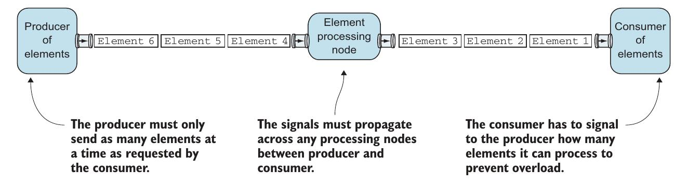
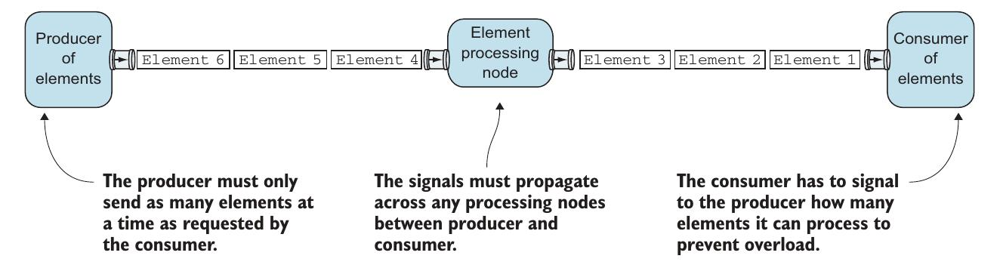

Изучаем akka-streams, день 1
Как все организованно
Я решил написать статью про akka-streams, и про то как я разбираюсь с новыми вещами, я считаю что людям будет интересно как я это делаю. По той причине что я достаточно долго все понимаю и усваиваю, а таких как я много. Я уже имею средний бэкграунд по работе с акторами, надеюсь вы тоже.
Начало
Прежде чем я начал изучать akka-streams у меня было представление что это библиотека которая упрощает работу с потоком данных. В голову сразу приходит пример с вебсокетом в который постоянно приходит поток данных, и он должен это обработать(пачкой которая может поместиться в память) и вернуть обратно уже обработанные данные клиенту. Akka-streams привелек меня тем что он предлогает новый подход и новую абстракцию в работе со стримом данных. В ходе написания статьи я постоянно обращаюсь к различным источникам, что бы узнавать что то новое, начал я с замечательной книги Akka in Action. потому что это самое современное и объемное по Akka из всего что я нашел в интернете, на момент написания статьи, да и плюс уже купил.
Producer-Processing Node-Consumer
Если мы обрабатываем какой то поток данных есть что то, что воспроизводит их, например человек вводит данные, или другая программа пишет что то в лог или же какой то контроллер пишет байты куда то. И есть что то что потребляет эти данные уже в нужном ему виде. Например контроллер пишет байты в файл, сокет или еще куда то, а клиенту данные нужны уже обработаные и в виде json. То что создает данные это Producer, а то что потребляет данные - Consumer/. Между Producer-ом и Consumer-ом есть нечто, что обрабатывает данные и переводит в нужный вид или отбрасывает будем называть это Processing node.
Это отлично показано в изображении:
 
В akka-streams Consumer, должен сигнализировать Producer-у сколько он может обрабоать, что бы предотвратить перегрузку. А Producer в свою очередь должен слать ровно столько элементов, сколько запрашивает Consumer. И все элементы должны проходить через Processing Node, который делает обработку.
Дальше автор утверждает что все это очень напоминает акторы. И действительно есть что то. Но вот дело в том что логику общения между Consumer-ом и Producer-ом, где Consumer говорит Producer-у сколько элементов он может обработать при ограниченном количестве памяти, придется реализовывать самостоятельно. Логично. Давайте попробуем.

В akka-streams Consumer, должен сигнализировать Producer-у сколько он может обрабоать, что бы предотвратить перегрузку. А Producer в свою очередь должен слать ровно столько элементов, сколько запрашивает Consumer. И все элементы должны проходить через Processing Node, который делает обработку.
Дальше автор утверждает что все это очень напоминает акторы. И действительно есть что то. Но вот дело в том что логику общения между Consumer-ом и Producer-ом, где Consumer говорит Producer-у сколько элементов он может обработать при ограниченном количестве памяти, придется реализовывать самостоятельно. Логично. Давайте попробуем.
Делаем свой Producer-Processing Node-Consumer на основе акторов
Представим следующую задачу, есть файл, содержащий все сочинения Артура Конана Дойля. Producer читает данные по строчно из файла, и отдает их в processing node если его об этом просят. Так как в streaming штуках все идет от того занят ли сonsumer, то выдумывать задачу будем начиная от нужд сonsumer-а. Представим Consumer запрашивает, 10 строчек оканчивающихся вопросительным знаком за раз и не более, как только он получит их он даст сигнал producer-у что хватит, и потратит 2 секунды что бы показать их пользователю, после чего даст сигнал producer-у заново воспроизводить данные из источника. Processing Node будет получать данные(построчно) от producer-а и фильтровать в них вопросительные предложения. На самом деле я не написал этот код за один день, первую реализацию я выкинул как это часто бывает. Начал писать тесты, потом код, и в итоге в какой то момент перестал писать тесты и начил дебажить println-ами, закончилось плохо я все выкинул. DONT DO THAT!.
Что же получилось
Если вам удобнее склонить проект и просто запустить и посмотреть в любимой IDE вы можете найти его тут.
Для моего streaming приложения я включил акторов, тест кит из акки, и scalatest вещи без которых я считаю нельзя писать серъезные вещи(а мы то хотим).
build.sbt
val akkaVersion = "2.4.17" libraryDependencies ++= Seq( "com.typesafe.akka" %% "akka-actor" % akkaVersion, "com.typesafe.akka" %% "akka-testkit" % akkaVersion, "org.scalatest" %% "scalatest" % "3.0.1" % "test" )
Дальше нужно писать тесты для наших акторов, во многих проектов я использую специальный класс, для тестирования акторов - MultiThreadedActorContext, ничего супер умного, наверно вы тоже используете что то подобное.
MultiThreadedActorContext
package core import akka.actor.ActorSystem import akka.testkit.TestKit import org.scalatest.{BeforeAndAfterAll, MustMatchers, Suite, WordSpecLike} class MultiThreadedActorContext extends TestKit(ActorSystem("question-test-app")) with WordSpecLike with MustMatchers with StopSystemAfterAll { } trait StopSystemAfterAll extends BeforeAndAfterAll { this: TestKit with Suite => override protected def afterAll(): Unit = { super.afterAll() system.terminate() } }
Все наши тесты для акторов будут наследоваться от MultiThreadedActorContext, который создает перед запуском теста ActorSystem и останавливает ее же после завершения теста. Если вам не понятно что такое WordSpecLike, MustMatchers не тратьте не минуты, и погрузитесь в мир scalatest.
Перейдем к тестам. Началом для меня послужил тест для Producer-а. Он самый простой из всех 3х компонентов по этому я начал с него. В моем понимании это актор, который при старте открывает файл, при пролучении сообщения Produce читает из файла одну строчку.
В моем исходном файле первые четыре строчки пустые, а в пятой находится линия "THE COMPLETE SHERLOCK HOLMES". В этом тесте я просто вызвал 4 раза сообщение Produce, и на 5 вызов Produce я ожидаю "THE COMPLETE SHERLOCK HOLMES".
ProducerTest
package actors import actors.Producer.{Line, Produce} import core.MultiThreadedActorContext class ProducerTest extends MultiThreadedActorContext { val producer = system.actorOf(Producer.props(testActor)) val targetString = "THE COMPLETE SHERLOCK HOLMES" "Producer" must { "receive message Produce and send to testActor value of this line as string" in { producer ! Produce expectMsg(Line("", Some(producer))) producer ! Produce expectMsg(Line("", Some(producer))) producer ! Produce expectMsg(Line("", Some(producer))) producer ! Produce expectMsg(Line("", Some(producer))) producer ! Produce expectMsg(Line(targetString, Some(producer))) } } }
P.S: Если вы задаетесь вопросом что такое testActor, то вам стоит ознакомиться с документацией по akka-testkit.
Давайте напишем нашего Producer-а. Который всего лишь, отвечает на одно сообщение Produce.
Producer
package actors import actors.Producer.{EndOfFileStream, Line, Produce} import akka.actor.{Actor, ActorRef, Props} import scala.io.Source object Producer { case object Produce case class Line(text: String, producer: Option[ActorRef]) case object EndOfFileStream def props(processingNode: ActorRef) = Props(new Producer(processingNode)) } class Producer(processingNode: ActorRef) extends Actor { val lineStream = Source.fromFile("src/main/resources/cano.txt").getLines def receive = { case Produce => val iterator = lineStream if (iterator.hasNext) { val text = iterator.next() processingNode ! Line(text.trim, Some(self)) } else { processingNode ! EndOfFileStream } } }
Запускаем в терминале sbt test, круто, тест прошел успешно. Работает! Давйте теперь разберемся что есть что. Как указанно в изображении про Producer-ProcessingNode-Consumer, данные между producer-ом и consumer-ом проходят через processing node. Берем читаем линию из итератора , создаем кейс класс представляющий собой линию(Line), и отправляем в processingNode. На случай если в файле не осталось строк, сигнализируем в processing node о том что файл закончился(EndOfFileStream).
У вас наверно назрел вопрос вопрос, а не читает ли
Source.fromFile("src/main/resources/cano.txt").getLines весь файл в память?! Ответ - Нет.
Далее подумаем над тем что должен делать Consumer:
- Сигнализировать о том что он готов обрабатывать поток данных
- При получении опредиленного количества данных, он должен сигнализировать о том что он перегружен и больше не может обрабатывать поток данных
Consumer не должен общаться с Producer-ом напрямую, он должен общаться с ним через ProcessingNode. Для удобства сделаем Consumer дочерним актором для ProcessingNode.
Тест кейс для Consumer актора выглядит следующим образом:
Consumer
package actors import actors.Consumer.Load import actors.ProcessingNode._ import actors.Producer.EndOfFileStream import akka.testkit.TestProbe import core.MultiThreadedActorContext class ConsumerTest extends MultiThreadedActorContext { val parentActor = TestProbe() val consumer = parentActor.childActorOf(Consumer.props(testActor)) "Consumer" must { "send StartProducingQuestions to parent actor" in { consumer ! Load parentActor.expectMsg(StartProducingQuestions(None)) } "receive string and save it to its state, and send StartProducingQuestions" in { consumer ! "hi?" expectNoMsg() parentActor.expectNoMsg() } "receive string 10 times, and send StopProducingQuestions then " + "wait for 2 sec and send StartProducingQuestions again" in { for(i <- 0 until 10) { consumer ! "hi?" } consumer ! "hi?" expectMsg(List.fill(10)("hi?")) parentActor.expectMsg(StopProducingQuestions) parentActor.expectMsg(StartProducingQuestions(None)) } "receive EndOfFileStream and send to parentActor StopProducingQuestion" in { consumer ! EndOfFileStream parentActor.expectMsg(StopProducingQuestions) } } }
В тест кейсе мы проверяем отправляет ли Consumer, сообщение о том что пора генерировать данные в ProcessingNode,
а так же, сигнализирует ли он о том, что он перегружен(имеет 10 вопросительных предложений в своем состоянии), отправляя в ProcessingNode команду StopProducingQuestions, после чего спустя какое то время сигнализирует о том что ему нужны еще данные, командой StartProducingQuestions.
Реализация Consumer-а:
package actors import actors.Consumer.Load import actors.ProcessingNode.{StartProducingQuestions, StopProducingQuestions} import actors.Producer.EndOfFileStream import akka.actor.{Actor, ActorRef, Props} object Consumer { def props(uiActor: ActorRef) = Props(new Consumer(uiActor)) case object Load } class Consumer(uiActor: ActorRef) extends Actor { val processingNode = context.parent var questions = List.empty[String] val maxBoundedQuestions = 10 def receive = { case Load => println("Loading questions") processingNode ! StartProducingQuestions(None) case s: String => questions = s::questions if (questions.length < maxBoundedQuestions) { } else { uiActor ! questions questions = List.empty[String] processingNode ! StopProducingQuestions Thread.sleep(2000) println("Loading new batch") processingNode ! StartProducingQuestions(None) } case EndOfFileStream => println("FINISH: No data anymore") processingNode ! StopProducingQuestions } }
В качестве аргумента актор принимает ссылку на другой актор, uiActor, это компонент в который будут приходить список в уже обработанном виде, в нашем случае ввиде листа строк.
В состоянии актора мы храним вопросы, после того как их набирается определенное количество(10) то список вопросов отправляется в uiActor, а questions мы опустошаем, останавливаем производство вопросов(StopProducingQuestions) в ProcessingNode, ждем 2 секунды, и отправляем в ProcessingNode сигнал о том что требуются еще данные(StartProducingQuestions).
Осталось сделать самое основное - ProcessingNode.
ProcessingNode является посредником между Producer-ом и Consumer-ом
ProcessingNode должен:
- По умолчанию он должен просто быть создан и не делать ничего
- Сигнализировать Producer-у о том что нужно читать(производить) строки
- Сигнализировать Producer-у о том что нужно перестать читать(производить) строки
- Если Consumer ожидает вопросы от ProcessingNode, то ProcessingNode должен получать строки и фильтровать их, есть ли в них вопросительный знак, если нет то он должен исключать эту строку.
ProcessingNodeTest
package actors import actors.ProcessingNode._ import actors.Producer.Produce import akka.testkit.TestProbe import core.MultiThreadedActorContext class ProcessingNodeTest extends MultiThreadedActorContext { val testProducer = TestProbe() def fixture = new { val processingNode = system.actorOf(ProcessingNode.props(TestProbe().ref)) } "ProcessingNode" must { "not produce anything by default" in { val processingNode = fixture.processingNode processingNode ! ShouldProduce(testActor) expectMsg(false) } "trigger Producer to produce lines when it receives StartProducingQuestions" in { val processingNode = fixture.processingNode processingNode ! StartProducingQuestions(Some(testProducer.ref)) processingNode ! ShouldProduce(testActor) testProducer.expectMsg(Produce) expectMsg(true) } "trigger Producer to stop producing line when it receives StopProducingQuestion" in { val processingNode = fixture.processingNode processingNode ! StartProducingQuestions(Some(testProducer.ref)) testProducer.expectMsg(Produce) processingNode ! StopProducingQuestions processingNode ! ShouldProduce(testActor) expectMsg(false) } } }
В этом тесте я использую хитрость, я передаю тестовую ссылку на testProducer в виде option-а что бы слать в него сообщения, так как мне надо тестировать приходят ли в child-акторы ожидаемые мной сообщения.
ProcessingNode
package actors import actors.ProcessingNode._ import actors.Producer.{EndOfFileStream, Line, Produce} import akka.actor.{Actor, ActorRef, Props} import akka.pattern.pipe import scala.concurrent.ExecutionContext.Implicits.global import scala.concurrent.Future object ProcessingNode { case class ShouldProduce(out: ActorRef) case class StartProducingQuestions(producer: Option[ActorRef]) case object StopProducingQuestions case class GetConsumer() def props(uiActor: ActorRef) = Props(new ProcessingNode(uiActor)) def isQuestion(trimmed: String) = trimmed.endsWith("?") || trimmed.endsWith("?\"") } class ProcessingNode(uiActor: ActorRef) extends Actor { var shouldProduce = false val consumer = context.actorOf(Consumer.props(uiActor)) val producer = context.actorOf(Producer.props(self)) def receive = { case StartProducingQuestions(testProducer) => shouldProduce = true testProducer.getOrElse(producer) ! Produce producer ! Produce case StopProducingQuestions => shouldProduce = false case Line(text, testProducer) => val trimmed = text.trim if (isQuestion(trimmed)) { consumer ! trimmed } if (shouldProduce) { testProducer.getOrElse(producer) ! Produce } case GetConsumer() => Future.successful(consumer) pipeTo sender() case ShouldProduce(out) => out ! shouldProduce case EndOfFileStream => consumer ! EndOfFileStream } }
Теперь реализовав логику по работе с потоком данных через акторы можно написать клиентское приложение, для теста я написал простую консольную программу:
ConsoleQuestionApp
package app import actors.Consumer.Load import actors.ProcessingNode import actors.ProcessingNode.GetConsumer import akka.pattern.ask import akka.actor.{Actor, ActorRef, ActorSystem, Props} import akka.util.Timeout import scala.concurrent.duration.DurationInt import scala.concurrent.ExecutionContext.Implicits.global object ConsoleQuestionApp extends App { val system = ActorSystem("question-app") val ui = system.actorOf(Props[ConsoleClient]) implicit val timeout = Timeout(100 second) val processingNode = system.actorOf(ProcessingNode.props(ui)) val consumerFuture = processingNode.ask(GetConsumer()).mapTo[ActorRef] consumerFuture.map(ref => ref ! Load) } class ConsoleClient extends Actor { def receive = { case (x::xs) => println("Received data:") println((x::xs).mkString("\n")) } }
Теперь давайте запустим нашу консольную программу:
$ sbt run [info] Loading project definition from /home/vol/Projects/stream-processing-via-actor/project [info] Set current project to stream-processing-via-actor (in build file:/home/vol/Projects/stream-processing-via-actor/) [info] Running app.ConsoleQuestionApp Loading questions Received data: "how the deuce did he know that I had come from Afghanistan?" "When shall we see them?" occasionally do experiments. Would that annoy you?" tobacco, I hope?" child with a new toy. "What do you think of that?" discovery of mine?" "And yet you say he is not a medical student?" could I meet this friend of yours?" "Why, what is there against him?" misfortunes. "What are you up to now?" Loading new batch Received data: in Utrecht, in the year '34. Do you remember the case, Gregson?" "Nor Lestrade?" "You wish me to come?" not a moment to be lost," I cried, "shall I go and order you a cab?" "Would you mind reading it to me aloud?" man was a sergeant of Marines?" said, in the blandest voice, "what your trade may be?" your idea of a detective?" they have seen every detail for themselves?" "And these other people?" Loading new batch Received data: that puzzles you?"
Итог
Мы написали свое первое streaming-приложение, что лично мне дало большее понимание, зачем нужен фреймворк вроде akka-streams.